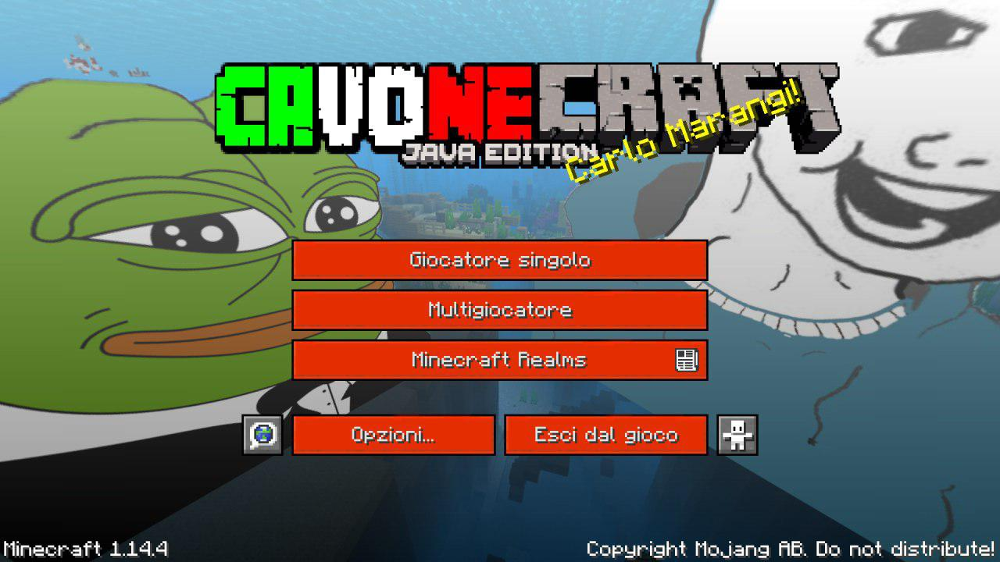
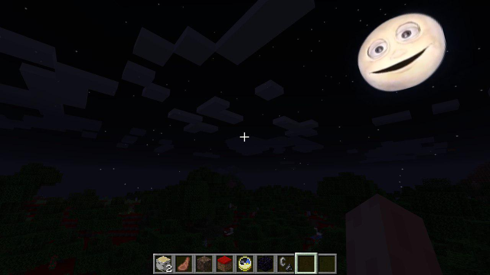
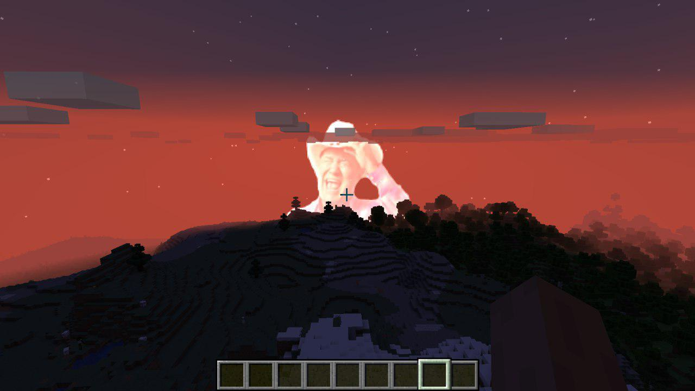
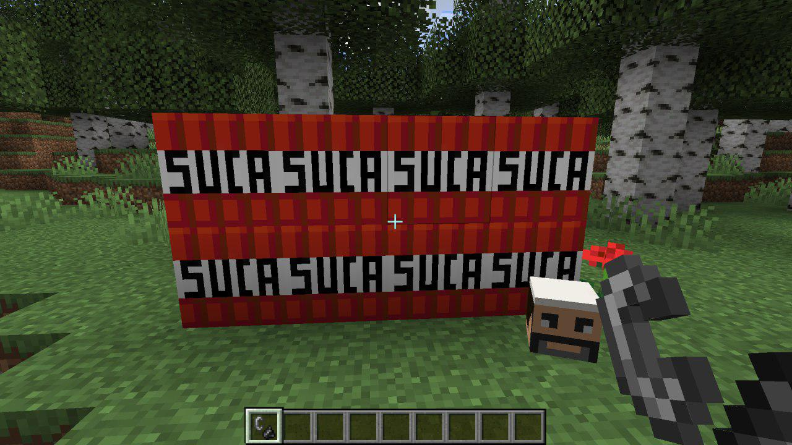
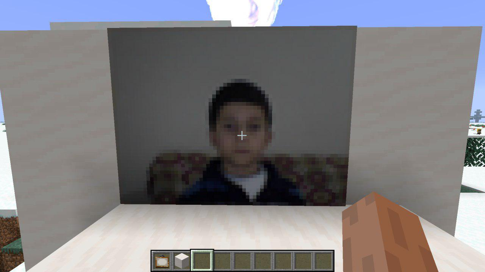

CavoCraft is a resourcepack for Minecraft designed and developed by Ezio Grezzo. It contains denigrating and defiant materials and for this reason it should be installed and used only by an enough mature public. Right now it's avaiable for the Minecraft version 1.14.4.
All the other versions are avaiable on github, then let's do a jump over there.
    